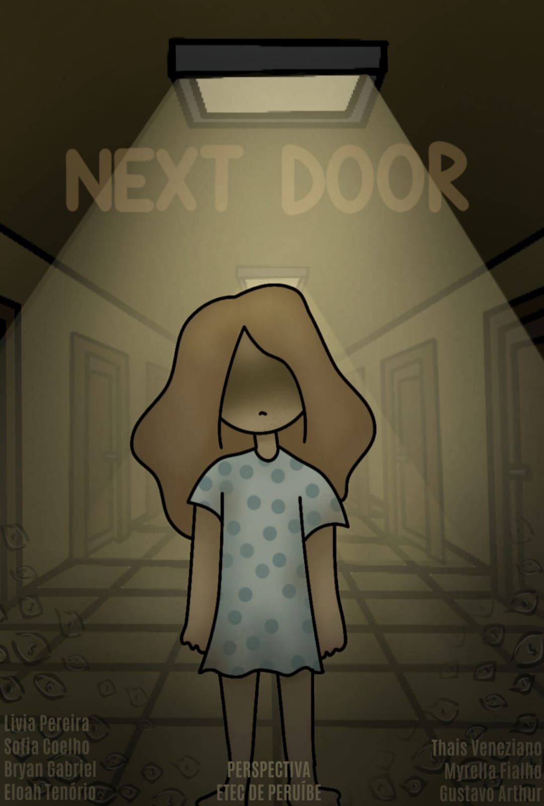

NextDoor é um jogo de suspense psicológico e exploração narrativa desenvolvido pelo grupo Perspectiva. A história acompanha uma paciente em coma que explora a própria consciência enquanto enfrenta distorções da realidade, enigmas e a constante sensação de estar sendo observada.
Ao explorar esse mundo e investigar pistas, a protagonista começa a descobrir a origem dessa sensação e a reconstruir sua percepção da realidade, questionando o que é real e o que é fruto de sua própria mente, até compreender sua condição.
O jogo combina exploração de cenários, resolução de enigmas e investigação narrativa, abordando temas como saúde mental, percepção e manipulação psicológica em uma atmosfera de suspense e incerteza.